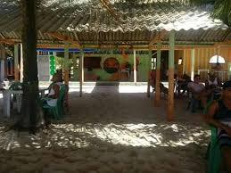

Entrada
peixe frito
peixe com farofa 24 $

Entrada
peixe frito
peixe com farofa 24 $
Entrada
peixe frito
peixe com farofa 24 $
Entrada
peixe frito
peixe com farofa 24 R$
História do Restaurante

Informaçoes Sobre o Restaurante
Horaios
12:00 ate 15:00
Localizaçao
23231
1313112
Contato
whatzapp
2322112-1213312